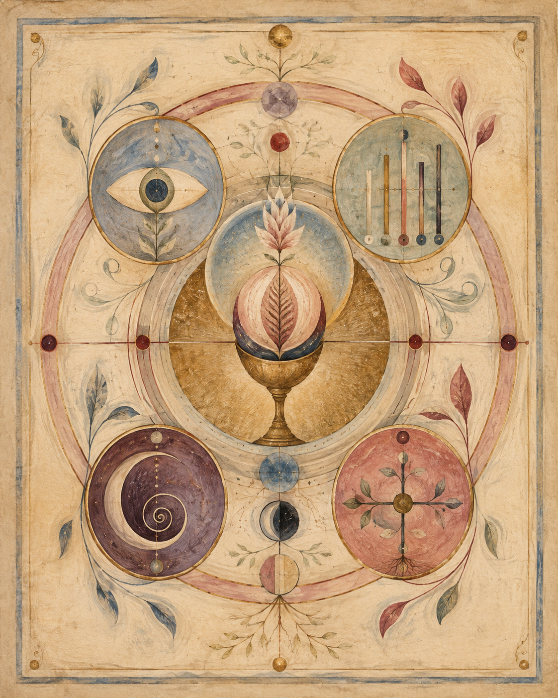
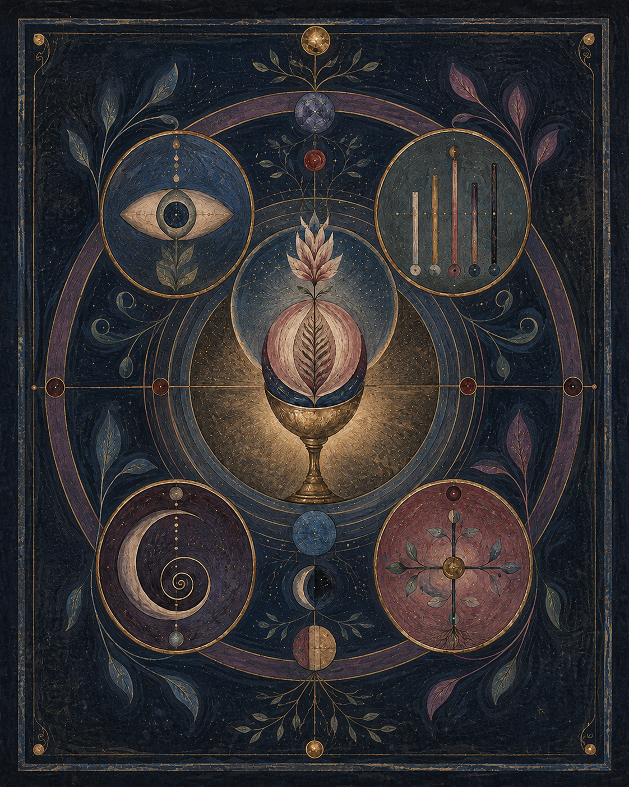

Observation
What was felt or witnessed remains a record of what was felt or witnessed.
Reader’s threshold · Orientation 00
A living record asks for a particular kind of attention: slow enough for each layer to remain what it is.


This is a living archive—one practitioner’s record of working with the body’s own living waters since 2022: the history behind it, the practice, the measurements, and what they have come to mean. It is still being written.
A few things to carry as you read.
The ground
Everything here was observed in one body, one context, one dietary baseline, across one stretch of years. It is written from inside the work, not above it.
Where something was measured, the conditions are named. Where something was felt, it is offered as what was felt. None of it is instruction for another body, and none of it is medical guidance.
A visual key
A measurement and a myth are not the same kind of statement. Each layer is allowed to stay what it is.
What was felt or witnessed remains a record of what was felt or witnessed.
A measurement stays a measurement. Its conditions remain visible.
A myth stays luminous. Historical material remains held in its own register.
A hypothesis stays open. Meaning is named without being mistaken for proof.
Conductivity readings may sit beside dreams, chemistry beside Inanna, field notes beside history. Nothing here asks those layers to collapse into one another.
The companion
Where an outside finding deepens what the body already showed, it is welcome. Where it would only stand guard in front of the experience, it has been moved out of the way—gathered into the reference rooms and into the sources at the foot of each piece, available to anyone who wants it, in nobody’s way.
The experience leads. The science comes in where it harmonizes understanding, and not to ask permission.
It asks for neither belief nor dismissal.
Only careful reading.
The attention
The observer is part of the field. That does not remove the need for discernment. It deepens it.